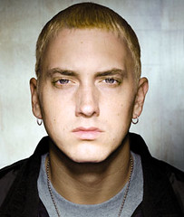

Shawn Mendes
Cantante canadiense
–Mi consejo para cualquiera que tenga un sueño es que nunca deje de perseguirlo–
Nació el 8 de agosto de 1998, en Toronto, Ontario, Canadá.Empezó a darse a conocer a mediados del año 2013 cuando comenzó a subir versiones de otras canciones en Vine recibiendo millones de visitas gracias a los seis segundos con fragmentos de interpretaciones de muchas canciones populares.
Camila Cabello
Cantante cubana-mexicana
–No serás feliz si no estás feliz con cómo eres–
Camila Cabello nació el 3 de marzo de 1997 en Cojímar, Cuba.A punto de cumplir 15 años, su madre le preguntó qué deseaba para su fiesta de cumpleaños, y le pidió permiso para hacer la audición del programa The X Factor, donde comenzó su carrera artistica.
Imagine Dragons
Banda estadounidense de Pop rock originaria de Las Vegas, Nevada.
La banda ganó el reconocimiento mundial con el lanzamiento de su álbum de estudio debut Night Visions (2012), y con su canción "It's Time". Billboard colocó a Imagine Dragons en la cima de su ranking del 2013 "Year In Rock", además los llamó «la banda revelación del 2013». La revista Rolling Stone llamó a su canción Radioactive de Night Visions «el mayor éxito rock del año».

Eminem
Cantante estadounidense
–La fama me golpeó como una tonelada de ladrillos–
Marshall Mathers,fue criado por su progenitora en un barrio de negros en Detroit, donde recibió influencias del hip hop desde muy joven.Sus primeras rimas las escribió con catorce años, edad en la que pasó a formar parte del dúo Soul Intent.